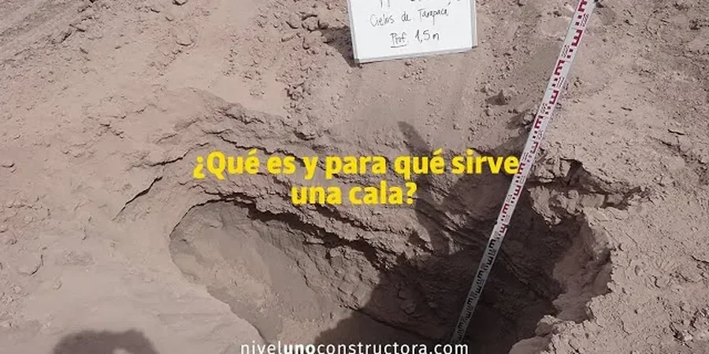

Our Hull office delivers comprehensive geotechnical services across the Humber region, supporting projects from initial site characterization through to foundation design and construction monitoring. We combine consolidated regional experience with calibrated laboratory and field testing to address local ground conditions effectively. Our team works closely with developers, contractors, and local authorities to provide code-compliant reports that facilitate planning and construction. Whether for residential, commercial, or infrastructure schemes, our integrated approach ensures solid subsurface understanding and practical foundation solutions. For deeper insights into our methodologies, explore our work on soil classification and geotechnical analysis for soft soil.
